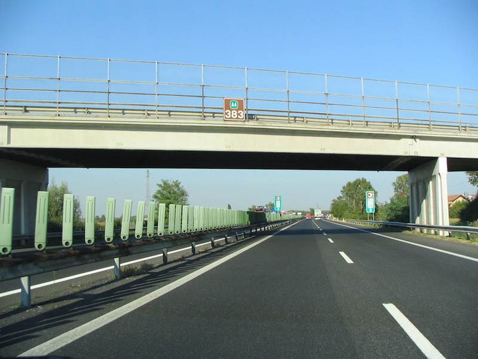

Italian highways are certainly a place where your adrenaline level increases considerably. Italians like high speed and hate slow cars blocking their way. They use horns and flashing headlights to show their "driver's feelings" in a very explicit way. Also, Italian highways are not free. If you plan to rent a car and drive around, be prepared to budget some expenses for highway tolls. {This is an excerpt from the eBook "Italy from the Inside: the definitive survival guide for travelers"}